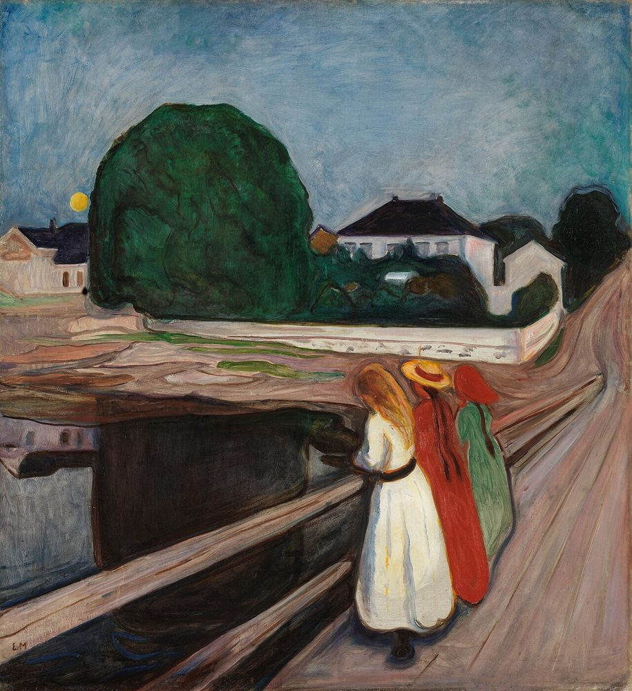

The Girls on the Bridge
Edvard Munch painted three girls at the rail of the Åsgårdstrand pier about 1901. You have just been one of them.
The road you ran down is the one in The Scream; the people you passed in the street come from Anxiety and Evening on Karl Johan.
Paintings: public domain, via Wikimedia Commons. Street plan © OpenStreetMap contributors.
This world needs WebGL, which this browser could not start.